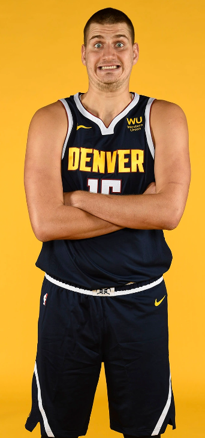

Nikola Jokić
Center
Basic Info
Age: 27Height: 211 cm
Weight: 129 kg
Position: Center
Nickname:Joker
Current team: Denver Nuggets
Proffesional career
Mega Basket (2012-2015)
Jokić played youth basketball in Vojvodina Srbijagas, where he became a
dominant figure and received interest from bigger teams. In the summer of 2012, Jokić signed a
contract with Mega Vizura, although in the first season with the team he played mostly for their
junior team in 2012–13. At the age of 17, he appeared in 5 games of the Serbian League and
averaged 1.8 points and 2 rebounds in 10.2 minutes per game. In the 2013–14 season, he saw more
minutes on the court for the senior team. Over 25 Adriatic League games, he averaged 11.4
points, 6.4 rebounds and 2.5 assists per game. He also played 13 games with the team in the
Serbian League and had similar production, averaging 10.9 points, 6 rebounds and 3.3 assists per
game.
On June 26, 2014, Jokić was selected by the Denver Nuggets with the 41st overall pick in the
2014 NBA draft and following this and the departure of Ratko Varda, he became one of the
team leaders in the 2014–15 season. In the first game of the Adriatic League, he led his team to
a 103–98 win over MZT Skopje, by scoring 27 points and grabbing 15 rebounds for a total index
rating of 44. He was named the MVP of Round 1. On November 3, he recorded 17 points,
12 rebounds and season-high 8 assists for a total index rating of 40, in a 90–84 victory over
Zadar. For such performance, he was named the MVP of the Round 6. On February 7, he
scored 27 points and grabbed 15 rebounds in a 77–88 loss to Szolnoki Olaj. He was named the
MVP of the Round for the third time in a season. For his performances over the month, he was
named the MVP for February, having averaged 21.7 points and 12.3 rebounds per game. On March
21, he scored a season-high 28 points and added 15 rebounds to help his team win with 100–96
over Igokea. He was named the MVP of the Round 26, his fourth Round MVP award over the
season. Even though Mega Leks finished in 10th place in the Adriatic League, Jokić became
one of the league's most valuable players. Over 24 games played, he averaged 15.4 points,
league-leading 9.3 rebounds and 3.5 assists per game, while leading the league with the index
rating of 22. On March 26, he was officially named the Adriatic League regular season
MVP. He was also named the ABA League Top Prospect for the 2014–15 season.
Denver Nuggets
In the summer of 2015, Jokić joined the Denver Nuggets, one season after being drafted. On July
28, 2015, he signed a contract with the Nuggets after averaging 8.0 points and 6.2 rebounds in
five summer league games for the team. On November 18, 2015, he had a then season-best game
with 23 points and 12 rebounds in a 109–98 loss to the San Antonio Spurs. On January 10,
2016, he recorded a career-high nine assists in a 95–92 win over the Charlotte Hornets. On
February 1, he recorded career highs of 27 points and 14 rebounds in a 112–93 win over the
Toronto Raptors. On April 8, he set a new career high with 15 rebounds in a 102–98 win over
the San Antonio Spurs. At the season's end, he finished third in the 2016 NBA Rookie of the
Year Award voting and earned NBA All-Rookie First Team honors.
On July 9, 2018, Jokić signed a five-year, $148 million maximum contract extension with the
Nuggets. On October 20, 2018, in the Nuggets' second game of the season, Jokić recorded
35 points, 12 rebounds and 11 assists in a 119–91 win over the Phoenix Suns. He joined Wilt
Chamberlain as the only players in NBA history to post a triple-double with 30 or more points
without missing a field goal—Chamberlain did it twice, in 1966 and 1967. He also became just
the second Nugget to record a triple-double in the first two games of the season, joining Fat
Lever. Jokić went on to earn Western Conference Player of the Week honors for the first week
of the season, becoming the sixth player in franchise history to win the award three or more
times, joining Alex English, Dikembe Mutombo, Carmelo Anthony, Allen Iverson and Chauncey
Billups. On November 3, he had a season-high 16 assists and 10 rebounds to go with seven
points in a 103–88 win over the Utah Jazz. On November 9, he had a season-high 37 points and
tied his career best with 21 rebounds in a 112–110 loss to the Brooklyn Nets. For his
efforts in 2018, he was recognized as the Serbian Player of the Year by the Basketball
Federation of Serbia.
On January 5, he scored a then season-high 39 points in a 123–110 win over the Charlotte
Hornets. His second Player of the Week honor came for games played from December 31 to
January 6.
